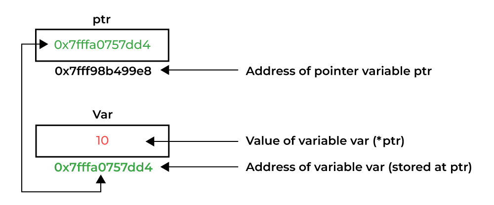

C语言程序设计基础
指针++
计算机学院 杨已彪
yangyibiao@nju.edu.cn
提纲
-
回顾pointer
-
malloc/free
-
字符数组
回顾

回顾
-
指针类型
int *char *
-
指针使用
*间接寻址&取地址
-
指针运算
++的含义
📄 示例代码：chat_int.c
可视化理解指针
Understanding “pointer”, visually, Visualize Code Execution
堆/栈

-
text（代码区）：存放程序的机器指令
-
data（已初始化的静态存储区）：存放已初始化的全局变量、static变量
-
bss（未初始化的静态存储区）：存放未初始化或初始化为0的全局变量、static变量
-
heap（堆）：动态分配区域, 由 malloc/free 管理, 内部是否连续取决于实现（逻辑上连续）
-
stack（栈）：由函数调用产生栈帧, 大小固定（线程创建时决定）内存连续，按地址下降（多数架构）
堆/栈

int a = 10; // data 段
int b; // bss 段（自动初始化为0）
static int s1 = 5; // data 段
static int s2; // bss 段
char *p = "Hello"; // text 段（字符串常量）
函数调用栈
栈顶（低地址）
┌───────────────────┐
│ frame of func C │
├───────────────────┤
│ frame of func B │
├───────────────────┤
│ frame of func A │
├───────────────────┤
│ main frame │
└───────────────────┘
栈底（高地址）
每次函数调用只是往栈里 push 一个栈帧，函数返回时就pop。
函数调用栈
“线程的栈大小”是固定的
例如：
Linux 默认线程栈大小：8MB
函数栈大小取决于：
-
参数压栈
-
返回地址
-
局部变量大小
-
保存寄存器
-
编译器优化（比如尾递归优化）
函数调用栈
申请超大数组
void foo() {
int bigArray[100000000]; // 400MB，远超默认1–8MB栈
}
int main() {
foo();
return 0;
}
会触发：
Segmentation fault (stack overflow)
动态内存分配
-
可变长数组
int arr[n]（Variable Length Array） -
不推荐使用VLA
- VLA分配在栈上/栈空间通常有限
- 无法进行静态边界检查/静态分析工具难以推断边界
- 编译器优化困难
int n;
scanf("%d", &n);
int arr[n];
// 若n非常大，直接栈溢出，比 malloc() 分配失败更隐蔽，且难以检测
动态内存分配
malloc和free
C函数库提供malloc和free，分别用于执行动态内存的分配与释放
int *arr = NULL;
int n = 10;
// 动态分配可以存放10个整数的内存空间
arr = (int*)malloc(n * sizeof(int));
// TODO
free(arr);
内存分配函数malloc
#include <stdlib.h>
void *malloc(size_t _Size);
向malloc申请的空间的大小是以字节为单位的
返回类型默认是void *
int *array = (int *) malloc(len * sizeof(int))
int *array = malloc(len * sizeof(int))
int *array = malloc(len * sizeof(*array))
- 分配失败则返回NULL便于后续处理
- 与arr[n]过大则直接栈溢出
内存释放函数free
#include<stdlib.h>
void free(void *pointer);
free(ptr):释放指针指向内存，指针变量依然存在(野指针)
为防止释放后写, 建议 ptr = NULL
- 需要释放之前动态申请的内存, 一对一配对使用
- 内存泄漏memory leak
动态内存分配的常见错误
-
申请了没有free
-
对NULL指针进行解引用
-
对分配的内存越界操作
-
释放并非动态分配的内存（段错误）free array
-
试图释放动态分配的内存的部分
-
释放后依旧试图继续使用
-
double free
一些其他memory allocation函数
void *malloc(size_t size);
void *calloc(size_t nitems, size_t size); // 分配的时候置0
void *realloc(void *ptr, size_t new_size); // 扩容
void free(void *ptr);
-
malloc: allocates memory
-
calloc: allocates and zeros memory
-
realloc: expands previously allocated memory block
-
free deallocates previoulsy allocated memory
字符数组
涵盖字符串常量和字符串变量.
字符串常量在C标准中称为字符串字面量.
字符串是字符数组, 用特殊字符(空字符)标记结束.
C库提供了一组用于处理字符串的函数.
字符串字面量
字符串字面量是用双引号括起来的字符序列:
"Talk is cheap. Show me the code."
字符串字面量可能包含转义序列.
转义字符经常出现在printf和scanf格式字符串中.
字符串字面量
例如, 字符串
"520\nNJU"
每个\n字符使光标移到下一行:
520
NJU
字符串字面量
反斜杠字符(\)可用于将字符串字面量从一行延续到下一行:
printf("When you come to a fork in the road, take it. \
--Yogi Berra");
通常, \字符可用于将程序的两行或多行连接成一行.
字符串字面量
一种更好的处理长字符串字面量的方法:
当两个或多个字符串字面量相邻时, 编译器会将它们连接成一个字符串.
此规则允许我们将字符串字面量拆分为两行或多行:
printf("When you come to a fork in the road, take it. "
"--Yogi Berra");
如何存储字符串字面量
当C编译器在程序中遇到长度为 n 的字符串字面量时, 它会为该字符串分配 n+1 个字节的内存.
这块内存空间将用来存储字符串中的字符, 以及一个额外的字符:
空字符 标记字符串的结尾.
空字符是所有位都为0的字节, 因此它用转义序列 ‘\0’ 表示.
如何存储字符串字面量
字符串字面量"abc"存储为4个字符的数组:
字符串""(空串)会存储一个空字符:
注意: 区别空字符和空格字符
如何存储字符串字面量
字符串字面量存储为数组, 编译器将其视为char *类型的指针.
printf和scanf都需要一个char *类型的值作为它们第一个参数.
printf函数传递"abc"的地址(指向字母a内存中存储位置的指针):
printf("abc");
对字符串字面量的操作
可以在任何允许使用char *指针的地方使用字符串字面量:
char *p;
p = "abc"; /* 正确 */
该赋值使p指向字符串的第一个字符.
对字符串字面量的操作
可以对字符串字面量取下标:
char ch;
ch = "abc"[1]; // ch is now 'b'
将 0 ~ 15 的数字转换为等价的十六进制的字符形式的函数:
char digit_to_hex_char(int digit)
{
return "0123456789ABCDEF"[digit];
}
对字符串字面量的操作
尝试修改字符串字面量会导致未定义的行为:
char *p = "abc";
*p = 'd'; /*** WRONG ***/
可能会导致程序崩溃或行为异常.
字符串字面量与字符常量
包含单个字符的字符串字面量与字符常量不同.
-
"a"由指针表示. -
'a'由整数表示.
合法调用:
printf("\n");
非法调用:
printf('\n'); /*** 错误的 ***/
字符串变量
任何一维字符数组都可以用来存储字符串.
字符串必须以空字符结尾.
数组存储字符串的难点:
-
很难判断一个字符数组是否被用作字符串.
-
字符串处理函数必须小心处理空字符.
-
确定字符串的长度需要搜索空字符.
字符串变量
如果字符串变量需要存储 80 个字符, 则必须将其声明为 81:
#define STR_LEN 80
…
char str[STR_LEN+1];
长度加1可以为字符串末尾的空字符留出空间.
定义一个代表 80 的宏, 然后加 1 是一种惯用法.
字符串变量
声明字符串变量时, 请务必为空字符留出空间.
不这样做可能会在程序执行时导致不可预知的结果.
字符串的实际长度取决于终止空字符的位置.
STR_LEN + 1 长度的字符数组可以保存长度为 0 ~ STR_LEN之间的字符串.
初始化字符串变量
字符串变量可以在声明时初始化:
char date1[8] = "June 14";
编译器将自动添加一个空字符, 使date1可以用作字符串:
"June 14"在此上下文中不是字符串字面量.
C编译器将其视为字符数组初始化式的缩写.
初始化字符串变量
若初始化式太短无法填满字符串变量, 编译器会添加额外空字符:
char date2[9] = "June 14" ;
之后, date2将如下所示:
初始化字符串变量
字符串变量的初始化式不能长于变量, 但长度可以相同:
char date3[7] = "June 14";
因为没有给空字符留空间, 编译器不会尝试存储空字符:
初始化字符串变量
字符串变量的声明可省略长度, 这种情况下编译器会自动计算它:
char date4[] = "June 14";
编译器为date4分配8个字符的空间, 以存储"June 14"+'\0'.
如果初始化式很长, 则省略字符串变量的长度特别有用, 手动计算长度容易出错.
字符数组与字符指针
以下声明将date声明为一个数组:
char date[] = "June 14";
而以下声明则将date声明为一个指针:
char *date = "June 14";
由于数组和指针之间的密切关系, 这两种都可以用作字符串.
字符数组与字符指针
两种date之间存在的差异:
-
声明为数组时, 可以修改存储在date中的字符. 声明为指针时, date指向不应修改的字符串字面量.
-
声明为数组时, date是一个数组名. 声明为指针时, date是一个可以指向其他字符串的指针变量.
字符数组与字符指针
声明
char *p;
不会为字符串分配空间.
在使用p作为字符串之前, 必须把p指向字符数组.
一种可能是把p指向一个字符串变量:
char str[STR_LEN+1], *p;
p = str;
另一种可能是使p指向一个动态分配的字符串.
字符数组与字符指针
使用未初始化的指针变量作为字符串是一个严重的错误.
尝试创建字符串"abc":
char *p;
p[0] = 'a'; /*** WRONG ***/
p[1] = 'b'; /*** WRONG ***/
p[2] = 'c'; /*** WRONG ***/
p[3] = '\0'; /*** WRONG ***/
由于p尚未初始化, 这会导致未定义的行为.
字符串的读和写
使用printf或puts可以很简单输出字符串.
读入字符串则更困难, 因输入的串可能比存储它的字符串变量长.
要一次性读入字符串, 可以使用scanf或gets.
也可以使用scanf或getchar每次读入一个字符.
用printf和puts写字符串
转换说明 %s 允许printf输出字符串:
char str[] = "Are we having fun yet?";
printf("%s\n", str);
输出将是
Are we having fun yet?
printf会逐个写字符串中的字符, 直到遇到空字符.
用printf和puts写字符串
要打印字符串的一部分, 可以使用转换说明 %.ps
p 是要打印的字符数量.
语句
printf("%.6s\n", str);
将打印
Are we
用printf和puts写字符串
转换说明 %ms 将在大小为 m 的字段内打印字符串.
如果字符串少于 m 个字符, 则会在字段内右对齐输出.
如果要强制左对齐, 在m前面加一个减号.
m和p可以组合使用:
转换说明 %m.ps 会使字符串的前 p 个字符打印在大小为 m 的字段中.
用printf和puts写字符串
printf不是唯一可以输出字符串的函数.
C库还提供puts:
puts(str);
写完一个字符串后, puts总是会添加一个额外的换行符.
用scanf和gets读字符串
转换说明 %s 允许scanf将字符串读入字符数组:
scanf("%s", str);
str被视为指针, 因此无需在str前添加&运算符.
scanf会跳过空白字符, 然后读入字符并存储到str中, 直到遇到空白字符.
scanf会在字符串的末尾存储一个空字符.
用scanf和gets读字符串
scanf通常不会读取整行输入.
换行符会导致scanf停止读取, 空格和制表符也会.
要读取整行输入, 可以使用gets.
gets的特点:
-
不会在开始读字符串之前跳过空白字符.
-
持续读入直到找到换行符才停止.
-
忽略换行符而不存储它, 用空字符代替换行符.
用scanf和gets读字符串
考虑以下程序片段:
char sentence[SENT_LEN+1];
printf("Enter a sentence:\n");
scanf("%s", sentence);
假设在提示之后
Enter a sentence:
用户输入该行
To C, or not to C: that is the question.
scanf会将字符串"To"存储到sentence中.
用scanf和gets读字符串
假设将scanf替换为gets:
gets(sentence);
当用户输入与之前相同的输入时, gets将存储字符串
" To C, or not to C: that is the question."
存储到sentence中.
用scanf和gets读字符串
当把字符读入数组时, scanf和gets都无法检测数组何时已满.
它们存储字符时可能会越过数组的边界, 从而导致未定义的行为.
用 %ns 代替 %s 可以使scanf更安全.
n 是一个整数, 表示要存储的最大字符数.
gets本质上是不安全的, fgets是一个更好的选择.
逐个字符读字符串
程序员经常自己编写输入函数. 需要考虑的问题:
-
在开始存储字符串之前, 函数是否应该跳过空白字符？
-
什么字符会导致函数停止读取: 换行符、任何空白字符或其他字符？这个字符是存储在字符串中还是被丢弃？
-
如果输入字符串太长而无法存储, 函数应该做什么: 丢弃多余的字符或将它们留给下一次输入操作？
逐个字符读字符串
假设我们需要一个函数:
(1)不跳过空白字符;
(2)在第一个换行符处停止读取(不存储到字符串中);
(3)丢弃多余的字符.
函数原型: int read_line(char str[], int n);
如果输入行包含多于n个的字符, read_line将丢弃额外的字符.
read_line将返回实际存储在str中的字符数量.
逐个字符读字符串
read_line主要由一个循环组成. 只要str中还有空间, 此循环就会调用getchar逐个读入字符并存储到str中:
int read_line(char str[], int n)
{
int ch, i = 0;
while ((ch = getchar()) != '\n') {
if (i < n)
str[i++] = ch;
}
str[i] = '\0'; /* terminates string */
return i; /* number of characters stored */
}
ch的类型为int而不是char, 因为getchar返回一个int值.
逐个字符读字符串
在返回之前, read_line在字符串末尾放置一个空字符.
标准函数(例如scanf和gets)会自动在输入字符串的末尾放置一个空字符.
如果要自己写输入函数, 必须手工加上空字符.
访问字符串中的字符
由于字符串是以数组的方式存储的, 可以使用下标来访问字符串中的字符.
要处理字符串s中的每个字符, 可以设置一个循环来对计数器i进行自增并通过表达式s[i]选择字符.
访问字符串中的字符
计算字符串中空格数的函数:
int count_spaces(const char s[])
{
int count = 0;
for (int i = 0; s[i] != '\0'; i++) {
if (s[i] == ' ')
count++;
}
return count;
}
访问字符串中的字符
使用指针运算代替数组取下标:
int count_spaces(const char *s)
{
int count = 0;
for (; *s != '\0'; s++) {
if (*s == ' ')
count++;
}
return count;
}
访问字符串中的字符
count_spaces示例引出的问题:
-
用数组操作还是指针操作来访问字符串中的字符？
A: 可以使用任意一种方法. 传统上, C 程序员倾向于使用指针操作.
-
字符串形式参数应该声明为数组还是指针？
A: 两者没有区别.
-
形式参数的形式(s[]或*s)是否会对实际参数产生影响？
A: 不会.
使用C语言的字符串库函数
一些编程语言提供的运算符可以对字符串进行复制、比较、拼接、选择等操作.
相比之下, C 的运算符无法操作字符串.
字符串在 C 中被视为数组, 因此对它们的限制方式与数组相同.
特别是, 它们都不能使用运算符进行复制或比较.
使用C语言的字符串库函数
直接尝试复制或比较字符串将失败.
不能使用=运算符将字符串复制到字符数组中:
char str1[10], str2[10];
…
str1 = "abc"; /*** WRONG ***/
str2 = str1; /*** WRONG ***/
把数组名用作=的左操作数是非法的.
用=初始化字符数组是合法的, 在声明中, =不是赋值运算符:
char str1[10] = "abc";
使用C语言的字符串库函数
尝试使用关系或相等运算符比较字符串是合法的, 但不会产生预期的结果:
if (str1 == str2) … /*** WRONG ***/
该语句将str1和str2作为 指针 进行比较.
str1和str2有不同的地址, 表达式str1 == str2的值一定为0.
使用C语言的字符串库函数
C 库提供了一组丰富的函数来对字符串执行操作.
需要字符串操作的程序应包含以下行:
#include <string.h>
在后续示例中, 假设str1和str2是用作字符串的字符数组.
strcpy(字符串复制)函数
strcpy函数的原型:
char *strcpy(char *s1, const char *s2);
strcpy将字符串s2复制到字符串s1中.
准确地说, strcpy将 s2指向的字符串 复制到 s1指向的数组中.
strcpy返回s1(指向目标字符串的指针).
strcpy(字符串复制)函数
调用strcpy, 把字符串"abcd"存储到str2中:
strcpy(str2, "abcd");
/* str2 现在包含 "abcd" */
把str2的内容复制到str1:
strcpy(str1, str2);
/* str1 现在包含 "abcd" */
strcpy(字符串复制)函数
在strcpy(str1, str2)的调用中, strcpy不会检查也无法检查str2指向的字符串的大小是否适合str1指向的数组.
如果不是, 则会产生未定义的行为.
strcpy(字符串复制)函数
调用strncpy函数是一种更安全但速度较慢的复制字符串的方法.
strncpy有第三个参数, 它限制将被复制的字符数.
把str2复制到str1的strncpy调用:
strncpy(str1, str2, sizeof(str1));
strcpy(字符串复制)函数
如果str2的长度大于或等于str1数组的大小, strncpy会导致str1中的字符串没有终止的空字符.
使用strncpy的更安全方法:
strncpy(str1, str2, sizeof(str1) - 1);
str1[sizeof(str1)-1] = '\0';
第二条语句保证str1始终以空字符结尾.
strlen(字符串长度)函数
strlen函数的原型:
size_t strlen(const char *s);
size_t是一个typedef名称, 表示C的一种无符号整型.
strlen(字符串长度)函数
strlen返回字符串s的长度, 不包括空字符. 例子:
int len;
len = strlen("abc"); /* len is now 3 */
len = strlen(""); /* len is now 0 */
strcpy(str1, "abc");
len = strlen(str1); /* len is now 3 */
strcat(字符串拼接)函数
strcat函数的原型:
char *strcat(char *s1, const char *s2);
strcat将字符串s2的内容附加到字符串s1的末尾.
它返回s1(指向结果字符串的指针). strcat示例:
char str1[20], str2[20];
strcpy(str1, "abc");
strcat(str1, "def");
/* str1 now contains "abcdef" */
strcpy(str1, "abc");
strcpy(str2, "def");
strcat(str1, str2);
/* str1 now contains "abcdef" */
strcat(字符串拼接)函数
与strcpy一样, strcat返回的值通常会被丢弃.
以下使用返回值的方法:
char str1[20], str2[20];
strcpy(str1, "abc");
strcpy(str2, "def");
strcat(str1, strcat(str2, "ghi"));
/* str1 now contains "abcdefghi";
str2 contains "defghi" */
strcat(字符串拼接)函数
如果str1数组的长度不足以容纳str2中的字符, 则调用strcat(str1, str2)会导致未定义的行为.
例子:
char str1[6] = "abc";
strcat(str1, "def"); /*** WRONG ***/
str1被限制为六个字符, 导致strcat写入超出数组末尾.
strcat(字符串拼接)函数
strncat函数是strcat的一个更安全但速度较慢的版本.
像strncpy一样, 它有第三个参数来限制它将复制的字符数.
调用strncat:
strncat(str1, str2, sizeof(str1) - strlen(str1) - 1);
strncat将以空字符终止str1, 该空字符不包含在第三个参数中.
strcmp(字符串比较)函数
strcmp函数的原型:
int strcmp(const char *s1, const char *s2);
strcmp比较字符串s1和s2, 根据s1是小于、等于还是大于s2, 返回一个小于、等于或大于0的值.
strcmp(字符串比较)函数
检查str1是否小于str2:
if (strcmp(str1, str2) < 0) /* is str1 < str2? */
…
检查str1是否小于或等于str2 :
if (strcmp(str1, str2) <= 0) /* is str1 <= str2? */
…
通过选择适当的运算符(<、 <=、 >、 >=、 ==、 !=), 可以测试str1和str2之间的任何可能的关系.
strcmp(字符串比较)函数
strcmp认为s1小于s2的情况:
-
s1和s2的前i个字符一致, 但s1的第i+1个字符小于s2的第i+1个字符.
-
s1的所有字符都与s2一致, 但s1比s2短.
strcmp(字符串比较)函数
在比较两个字符串时, strcmp查看字符串中字符对应的数值码.
一些底层字符集的知识有助于预测strcmp会做什么.
ASCII的重要性质:
-
A–Z、a–z 和 0–9 这几组字符的数值码是连续的.
-
所有大写字母都小于小写字母.
-
数字小于字母.
-
空格小于所有打印字符.
程序: 打印一个月的提醒列表
remind.c程序打印一个月的每日提醒列表.
用户将输入一系列提醒, 每个提醒有一个前缀说明是一个月中的哪一天.
当用户输入 0 而不是有效日期时, 程序将打印输入的所有提醒的列表, 按日期排序.
下一张幻灯片显示了该程序的会话.
程序: 打印一个月的提醒列表
Enter day and reminder: 24 Susan's birthday
Enter day and reminder: 5 6:00 - Dinner with Marge and Russ
Enter day and reminder: 26 Movie - "Chinatown"
Enter day and reminder: 7 10:30 - Dental appointment
Enter day and reminder: 12 Movie - "Dazed and Confused"
Enter day and reminder: 5 Saturday class
Enter day and reminder: 12 Saturday class
Enter day and reminder: 0
Day Reminder
5 Saturday class
5 6:00 - Dinner with Marge and Russ
7 10:30 - Dental appointment
12 Saturday class
12 Movie - "Dazed and Confused"
24 Susan's birthday
26 Movie - "Chinatown"
程序: 打印一个月的提醒列表
总体策略:
-
读入一系列日期和提醒的组合
-
按顺序存储(按日期排序)
-
显示
scanf将用于读取日期.
read_line将用于读入提醒.
程序: 打印一个月的提醒列表
字符串将存储在一个二维字符数组中.
数组的每一行都包含一个字符串.
程序读取日期以及相关提醒后采取的行动:
-
使用strcmp进行比较来查找数组以确定这一天所在的位置.
-
使用strcpy将该位置之后的所有字符串往后移动一个位置.
-
将这一天复制到数组中, 并调用strcat将提醒附加到这一天之后.
程序: 打印一个月的提醒列表
一个复杂的问题: 如何在两个字符的字段中右对齐日期.
解决方案: 使用scanf将日期读入到整数变量, 然后调用sprintf将日期转换回字符串形式.
sprintf类似于printf, 不同之处在于它将输出写入字符串. 调用
sprintf(day_str, "%2d", day);
把day的值写入day_str.
程序: 打印一个月的提醒列表
以下scanf调用可确保用户输入的数字不超过两位:
scanf("%2d", &day);
remind.c
/* Prints a one-month reminder list */
#include <stdio.h>
#include <string.h>
#define MAX_REMIND 50 /* maximum number of reminders */
#define MSG_LEN 60 /* max length of reminder message */
int read_line(char str[], int n);
int main(void)
{
char reminders[MAX_REMIND][MSG_LEN+3];
char day_str[3], msg_str[MSG_LEN+1];
int day, i, j, num_remind = 0;
for (;;) {
if (num_remind == MAX_REMIND) {
printf("-- No space left --\n");
break;
}
printf("Enter day and reminder: ");
scanf("%2d", &day);
if (day == 0)
break;
sprintf(day_str, "%2d", day);
read_line(msg_str, MSG_LEN);
for (i = 0; i < num_remind; i++)
if (strcmp(day_str, reminders[i]) < 0)
break;
for (j = num_remind; j > i; j--)
strcpy(reminders[j], reminders[j-1]);
strcpy(reminders[i], day_str);
strcat(reminders[i], msg_str);
num_remind++;
}
printf("\nDay Reminder\n");
for (i = 0; i < num_remind; i++)
printf(" %s\n", reminders[i]);
return 0;
}
int read_line(char str[], int n)
{
int ch, i = 0;
while ((ch = getchar()) != '\n') {
if (i < n)
str[i++] = ch;
}
str[i] = '\0';
return i;
}
字符串惯用法
处理字符串的函数是特别丰富的惯用法资源.
探索一些最著名的惯用法来编写strlen和strcat函数.
搜索字符串的结尾
strlen版本, 使用变量来跟踪字符串的长度:
size_t strlen(const char *s)
{
size_t n;
for (n = 0; *s != '\0'; s++)
n++;
return n;
}
搜索字符串的结尾
n的初始化移到它的声明中:
size_t strlen(const char *s)
{
size_t n = 0;
for (; *s != '\0'; s++) {
n++;
}
return n;
}
搜索字符串的结尾
条件*s != '\0'与*s != 0相同, 这又与*s相同.
使用这些观察的strlen版本:
size_t strlen(const char *s)
{
size_t n = 0;
for (; *s; s++) {
n++;
}
return n;
}
搜索字符串的结尾
对s进行自增并在同一个表达式中测试*s:
size_t strlen(const char *s)
{
size_t n = 0;
for (; *s++;){
n++;
}
return n;
}
搜索字符串的结尾
用while语句替换for语句, 会给出以下版本的strlen:
size_t strlen(const char *s)
{
size_t n = 0;
while (*s++) {
n++;
}
return n;
}
搜索字符串的结尾
尽管我们已经对strlen进行了相当多的精简, 但很可能仍然没有提高它的速度.
在某些编译器中, 一个运行速度更快的版本:
size_t strlen(const char *s)
{
const char *p = s;
while (*s)
s++;
return s - p;
}
搜索字符串的结尾
"搜索在字符串结尾的空字符"的惯用法:
第一个版本让s最终指向空字符.
while (*s)
s++;
第二个版本更简洁, 但s最终指向空字符后面的位置.
while (*s++)
;
复制字符串
复制字符串是另一种常见的操作.
为了介绍C的"字符串复制"惯用法, 将开发两个版本的strcat函数.
strcat的第一个版本使用两步算法:
-
确定s1末尾空字符的位置, 并让p指向它.
-
将字符从s2逐个复制到p指向的位置.
复制字符串
char *strcat(char *s1, const char *s2)
{
char *p = s1;
while (*p != '\0')
p++;
while (*s2 != '\0') {
*p = *s2;
p++;
s2++;
}
*p = '\0';
return s1;
}
复制字符串
p最初指向s1字符串的第一个字符:
复制字符串
第一个while语句定位s1末尾的空字符并让p指向它:
复制字符串
第二个while语句重复将s2指向一个字符复制到p指向的位置, 然后p和s2自增.
假设s2最初指向字符串"def".
第一次循环迭代后的字符串:
复制字符串
当s2指向空字符时, 循环终止:
在p指向的位置放置一个空字符后, strcat返回.
复制字符串
strcat的精简版:
char *strcat(char *s1, const char *s2)
{
char *p = s1;
while (*p)
p++;
while (*p++ = *s2++)
;
return s1;
}
复制字符串
strcat的精简版(存在缺陷):
char *strcat(char *s1, const char *s2)
{
char *p = s1;
/*
while (*p)
p++;
*/
while (*p++)
;
while (*p++ = *s2++)
;
return s1;
}
复制字符串
改进的strcat函数的核心是"字符串复制"惯用法:
while (*p++ = *s2++)
;
忽略两个++运算符, 括号内的表达式是一个赋值:
*p = *s2
赋值后, p和s2自增.
重复计算此表达式会将字符从s2指向的位置复制到p指向的位置.
复制字符串
但是是什么导致循环终止？
while语句测试赋值表达式*p = *s2的值, 也就是测试复制的字符.
除空字符外的所有字符都测试为真.
复制空字符后循环终止, 因此不需要手动添加空字符.
字符串数组
存储字符串数组的方法不止一种.
一种选择是使用二维字符数组, 每行一个字符串:
char planets[][8] = {"Mercury", "Venus", "Earth",
"Mars", "Jupiter", "Saturn",
"Uranus", "Neptune", "Pluto"};
数组中的行数可以省略, 但必须指定列数.
字符串数组
不幸的是, planets数组浪费了相当多的空间(额外的空字符):
字符串数组
大多数字符串集合都是长字符串和短字符串的混合.
我们需要的是一个参差不齐的数组, 它的行可以有不同的长度.
用指向 字符串的指针的数组 来模拟 C 中的不规则数组:
char *planets[] = {"Mercury", "Venus", "Earth",
"Mars", "Jupiter", "Saturn",
"Uranus", "Neptune", "Pluto"};
字符串数组
这个微小的变化对planets的存储方式产生了巨大的影响:
字符串数组
要访问其中一个行星的名称, 只需要对planets数组取下标.
访问行星名称中的字符与访问二维数组元素的方式相同.
在planets数组中搜索以字母 M 开头的字符串的循环:
for (i = 0; i < 9; i++)
if (planets[i][0] == 'M')
printf("%s begins with M\n", planets[i]);
命令行参数
运行程序时, 经常需要提供一些信息.
这可能包括文件名或修改程序行为的开关.
UNIX ls命令的示例:
ls
ls –l
ls -l remind.c
指针plus
int var = 10;
// Pointer to int
int *ptr1 = &var;
// Pointer to pointer (double pointer)
int **ptr2 = &ptr1;
指针Plus（双重指针）
int val = 10;
int* ptr = &val;
*ptr = 20;
int** double_ptr = &ptr;
**double_ptr = 30;

指针plus
int *p, q; // q是整数
*p++; // 取值并指针指向后挪
++*p; // 取指针指向值自增
int *p[5]; // 指针数组
int (*p)[5]; // 指向数组的指针
int *f(); // 返回值为指针的函数
int f()[]; // 不合法
int f[](); // 不合法
指针plus
指针数组 vs 数组指针•
int *p1[10];
int *(p2[10]);
int (*p3)[10];
命令行参数
命令行信息对所有程序都是可用的, 不仅仅是操作系统命令.
要访问 命令行参数, main必须含有两个参数:
int main(int argc, char *argv[])
{
…
}
命令行参数在 C 标准中称为 程序参数.
命令行参数
argc: (argument count)参数计数是命令行参数的数量.
argv: (argument vector)参数向量是指向命令行参数的指针数组(以字符串形式存储).
argv[0]指向程序名, 而argv[1]到argv[argc-1]指向剩余的命令行参数.
argv[argc]总是一个空指针——一个不指向任何东西的特殊指针.
宏NULL表示一个空指针.
命令行参数
如果用户输入命令行
ls -l remind.c
那么argc将为 3, 而argv将如下:

命令行参数
由于argv是一个指针数组, 访问命令行参数很容易.
通常, 需要命令行参数的程序会使用循环, 依次检查每个参数.
一种方法是循环: 使用一个整数变量作为argv数组的索引:
int i;
for (i = 1; i < argc; i++)
printf("%s\n", argv[i]);
命令行参数
另一种方法是构造指向argv[1]的指针, 然后重复自增指针:
char **p;
for (p = &argv[1]; *p != NULL; p++)
printf("%s\n", *p);
程序: 检查行星名称
planet.c程序说明了如何访问命令行参数.
该程序旨在检查一系列字符串, 找出哪些哪些是行星的名称.
字符串放在命令行中:
planet Jupiter venus Earth fred
该程序将指示每个字符串是否是行星名称, 如果是, 显示行星的编号:
Jupiter is planet 5
venus is not a planet
Earth is planet 3
fred is not a planet
planet.c
/* Checks planet names */
#include <stdio.h>
#include <string.h>
#define NUM_PLANETS 9
int main(int argc, char *argv[])
{
char *planets[] = {"Mercury", "Venus", "Earth",
"Mars", "Jupiter", "Saturn",
"Uranus", "Neptune", "Pluto"};
int i, j;
for (i = 1; i < argc; i++) {
for (j = 0; j < NUM_PLANETS; j++) {
if (strcmp(argv[i], planets[j]) == 0) {
printf("%s is planet %d\n", argv[i], j + 1);
break;
}
}
if (j == NUM_PLANETS) {
printf("%s is not a planet\n", argv[i]);
}
}
return 0;
}
string.h
常见的字符串函数
- 不受限制的字符串函数
size_t strlen (char const *string);
char *strcpy (char *dst, char const *src);
char *strcat (char *dst, char const *src);
int strcmp (char const *s1, char const *s2);
- 长度受限的字符串函数
char *strncpy (char *dst, char const *src, size_t len);
char *strncat (char *dst, char const *src, size_t len);
int strncmp (char const *s1, char const *s2, size_t len);
string.h
常见的字符串函数
- 查找字符或子串函数
char *strchr(char const *str, int ch);
char *strrchr(char const *str, int ch);
char *strpbrk(char const *str, char const *group);
char *strstr(char const *s1, char const *s2);
- 查找计数
size_t *strspn(char const *str, char const *group);
size_t *strcspn(char const *str, char const *group);
- 查找标记
char *strtok(char *str, char const *sep);